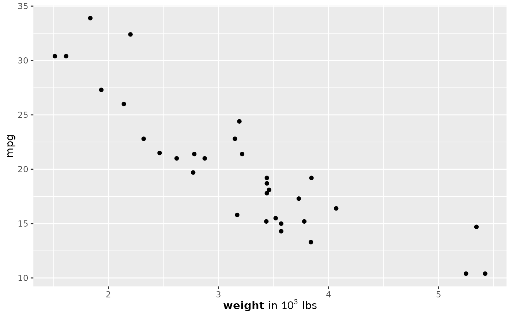

Use as a theme element for axis titles, axis labels, plot titles or any
other text element. The label is parsed as markdown — including
$...$ math — and rendered via MicroTeX.
Usage
element_markdown(
math_font = "",
fontsize = NULL,
lineheight = 1.2,
max_width = 0,
render_mode = c("typeface", "path"),
justify = FALSE,
...
)Arguments
- math_font
Name of the math font to use (e.g.
"stix").- fontsize
Convenience alias for
size; forwarded toggplot2::element_text()as the text size in points.NULL(default) uses the theme's inherited size.- lineheight
Multi-line height multiplier (default 1.2).
- max_width
Maximum width in big points for automatic line wrapping (default: 0, no wrapping).
- render_mode
"typeface"(default) or"path".- justify
Logical; justify wrapped lines. Requires
max_width.- ...
Additional arguments passed to
ggplot2::element_text()(e.g.colour,hjust).
Value
An S7 object of class element_markdown, inheriting from
ggplot2::element_text.
Details
This is an S7 subclass of ggplot2::element_text, so it inherits
the standard text properties (size, colour, hjust, ...) from the theme
and merges correctly with inherited theme entries.
Note that ggtext also exports a function called
element_markdown(). If both packages are attached, the one loaded
later wins; call gridmicrotex::element_markdown() explicitly to
be unambiguous. The two are not interchangeable — ggtext renders
HTML/CSS and images, this renders LaTeX math.
Examples
# \donttest{
if (requireNamespace("ggplot2", quietly = TRUE)) {
library(ggplot2)
ggplot(mtcars, aes(wt, mpg)) + geom_point() +
labs(x = "**weight** in $10^3$ lbs") +
theme(axis.title.x = gridmicrotex::element_markdown())
}

# }